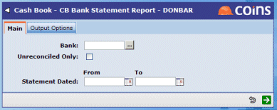
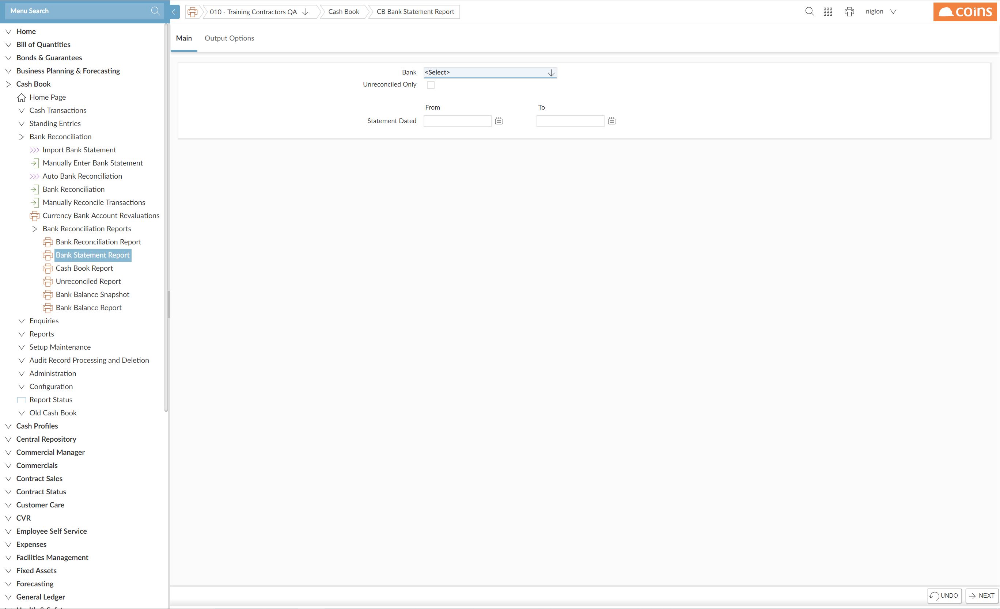

As the easiest way to establish the current status of your statement loading, we recommend running Bank Statement Report which shows all statements to the current date.


This report will show you the details of all the statements you select.